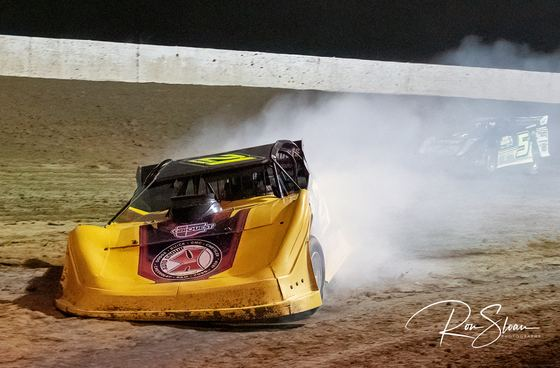
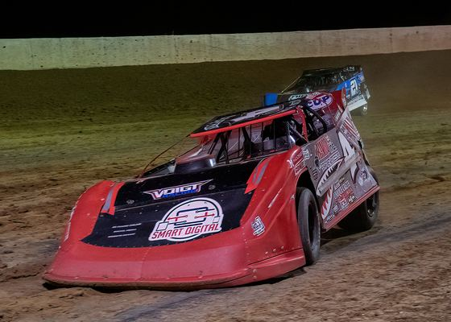
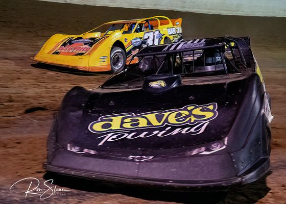
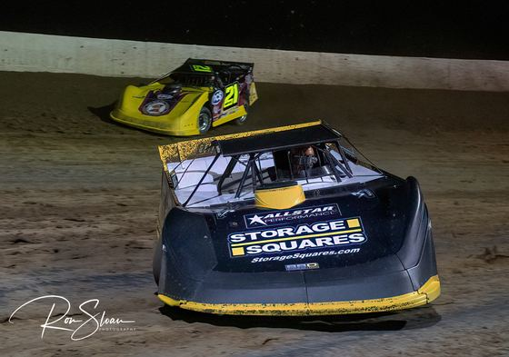

From the clay
Race night at Moberly
Tap any photo to view it full size. All shots taken on the 3/8-mile dirt oval.








Got a great shot from the stands?
Tag @MoberlyMotorsportsPark on Facebook and we'll feature it here.